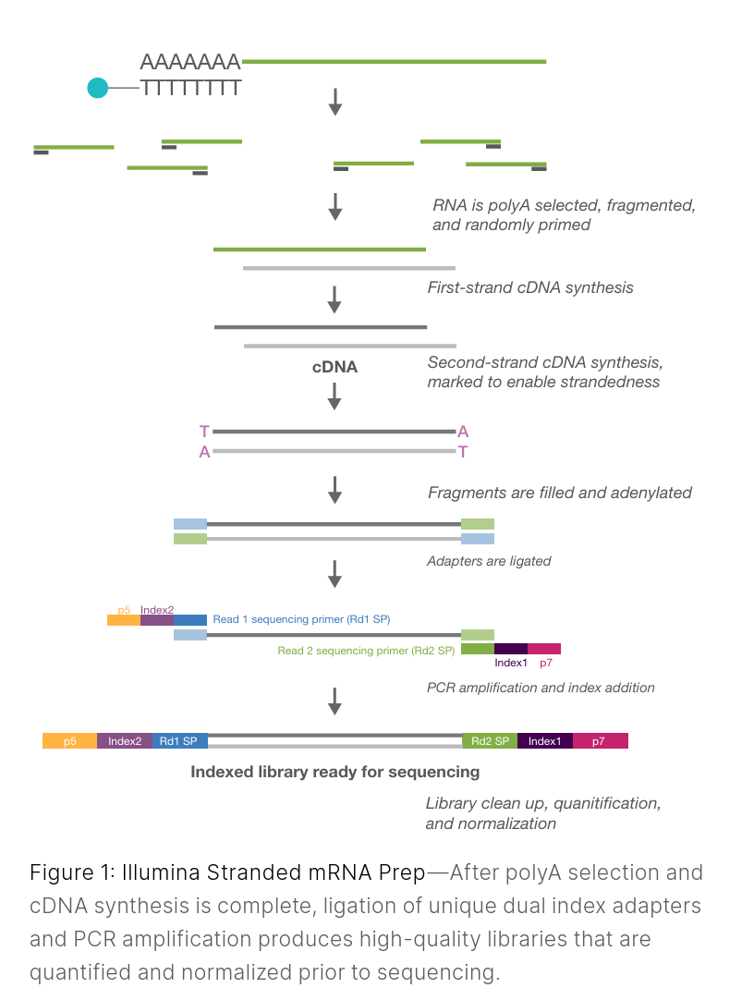
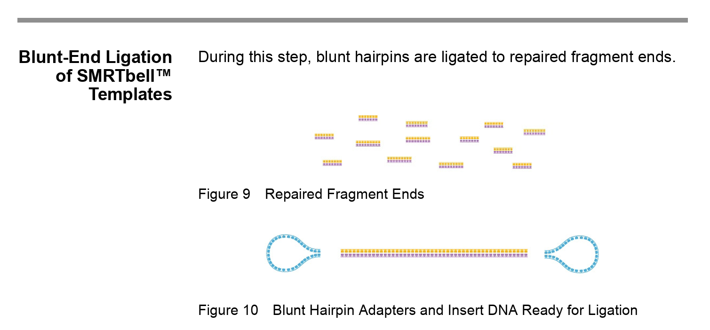
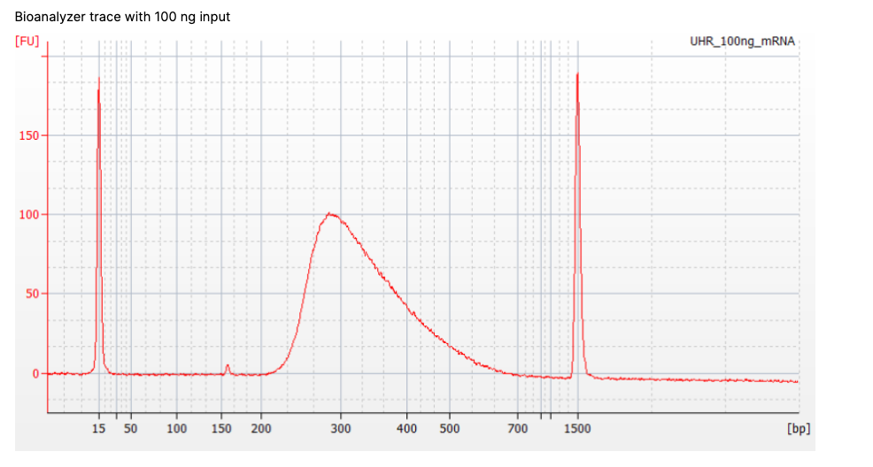

Planning for submission
You’ve done your experiment, extracted some DNA or RNA, and want to sequence it, but now what?
Quality control of DNA/RNA
Your DNA or RNA samples will need to pass certain quality cut-offs for sequencing, which the sequencing facility will ask for and will have thresholds they require upon submission (e.g., see the Otago Genomics Facility requirements here). After you have done your extractions in the lab, you should perform QC with:
A spectrophotometer (e.g., NanoDrop, DeNovix), which will give you a good indication of the purity/contamination of your sample through 260/280 and 260/230 ratios. This method is not very reliable for determining concentration of your nucleic acid.
A fluorescent-based quantification method (e.g., Qubit), which will give you a very accurate indication of concentration of your nucleic acid (but not of any contaminants).
A fragment analysis instrument (e.g., Agilent 2100 Bioanalyzer, Agilent 5300 Fragment Analyzer or Agilent TapeStation), which you can think of like a high-tech agarose gel. It will give you a good indication of your 28S/18S ratio for RNA (this is used to determine the overall RIN - RNA integrity number) or your fragment size distribution for DNA.
Together, these will give you an almost complete picture of your sample, ready for sequencing. Note that if your samples are below threshold quality, there are protocols that can allow for lower quality or degraded samples. Ideally, this should only be done if there is no option to re-extract, re-purify or repeat the experiment.
Sequencing libraries
The first thing that needs to be done for Illumina, PacBio or Oxford Nanopore (ONT) sequencing is to turn the DNA or RNA sample into something called a library. This converts the raw nucleic acids into a form that the sequencer can actually read. This is generally done by the technician that will also sequence your samples, but some labs may do library prep in-house (i.e., you may do it yourself!). Nanopore is a little different, in that it can sequence native RNA directly, with minimal prep before sequencing. DNA library preparation for ONT sequencing is also generally simpler than for Illumina and PacBio. This is because the technology used to sequence the DNA/RNA using ONT is quite different to how Illumina and PacBio achieve it–more on that in the next section on flow cells and sequencing platforms 101

Library preparation (for Illumina and PacBio) generally involves the following steps, and takes 1-2 days in the lab:
(Optional) Target enrichment / RNA selection
Selectively enriching for your target molecule (e.g., for standard RNAseq you likely will do polyA capture).
(RNAseq only) Converting your RNA into cDNA using reverse transcriptase.
Fragmentation (if needed) Some kits fragment RNA before reverse transcription, others fragment cDNA/DNA after.
This ensures fragments are the right size for the platform (e.g., ~200–400 bp for Illumina).End repair and A-tailing
Ends are cleaned up so adapters can be ligated efficiently.Adapter ligation
Adapters are short sequences that enable library binding to the flow cell (Illumina) or capture for SMRTbells (PacBio).
Some kits combine this with indexing.

Note: the SMRTbell technology allows HiFi (high fidelity) long read sequencing. The DNA becomes circularised, which allows the polymerase to make repeated passes around the DNA and the consensus sequence therefore has a higher accuracy than single pass sequencing.
Indexing (barcoding)
Indices allow multiple samples to be pooled together and sequenced on the same flow cell, then computationally separated afterward (called mulitplexing and demultiplexing).Size selection / cleanup
Typically done with magnetic beads to remove adapter dimers and select the desired fragment range.Library amplification (if required)
Some protocols use PCR to enrich adapter-ligated molecules; others (e.g., some PacBio) are PCR-free.Final QC and quantification
Using Qubit, Bioanalyzer/Tapestation/Fragment Analyzer, etc. This step ensures your library meets sequencing requirements.

There are different library prep methods (i.e., protocols) for each platform that you will also need to chose. This will depend on a few things, such as:
- The quality of your RNA/DNA (e.g., high-quality RNA allows polyA selection; degraded samples may require ribo-depletion or specialised kits).
- The species/tissue type you extracted your RNA/DNA from (e.g., plants have rRNA types that require plant-specific depletion kits, some tissues have high mitochondrial RNA content).
- The type of analysis you want to do i.e., what is your research question
For example, if you are doing a ‘standard’ Illumina RNA sequencing project (e.g,. you plan to do differential gene expression analysis to compare different samples), a common choice is Illumina stranded mRNA library prep, which uses polyA selection to capture mRNA. However, you may chose Illumina total RNA library prep with ribo-depletion, which is more expensive, but it has some advantages such as: it can capture non-polyadenylated RNAs (more comprehensive RNA profile) and and is a better option if your samples are partially degraded (it can also handle FFPE samples).
DISCUSSION 💬
Mature mRNAs have polyA tails, which can be selectively isolated using oligo DT coated beads that bind mature RNAs only. All other non-polyadenylated nucleic acids and cellular debris can then be washed away.
Indexing (barcoding) allows multiple samples to be pooled in a single sequencing run. This massively reduces cost and time. Because each library carries a unique index, the sequencer can mix them together, and downstream software can computationally separate (demultiplex) them accurately afterward.
Size selection ensures that fragments fall within the size range the sequencer expects. Without it, you may get:
adapter dimers (which waste sequencing reads as they take up ‘real estate’ on the flow cell)
too-short fragments (which cluster preferentially, causing over-representation and distorts the data e.g., sequencing may read into adapters or flow cell)
too-long fragments (which may not fully sequence or reduce yield)
Flow cells and sequencing platforms 101
The three major sequencing platform and consumables companies are Illumina, PacBio (Pacific Biosystems) and Oxford Nanopore Technologies (ONT). Each make different platforms/instruments that can handle different levels of throughput, but the chemistry and the ‘reading’ of the sequencing is the main point of difference between the three companies.
A few examples of the different platforms are:
Illumina
- MiSeq
- NextSeq
- NovaSeq
PacBio
- Sequel II
- Revio
Oxford Nanopore Technologies
- MinION
- GridION
- PromethION
A flow cell is the physical surface inside the sequencing machine (or platform) where the actual reading of DNA or RNA occurs. There are different sizes you can chose from, depending on how many reads you need. Although Illumina, PacBio, and ONT all call their consumables “flow cells,” the underlying technologies are very different.
For the most part, and in-depth knowledge of how these flow cells work is not needed to get you started with your sequencing project.
Here are the basic differences:
| Feature | Illumina | PacBio (HiFi / SMRT) | Oxford Nanopore (ONT) |
|---|---|---|---|
| How sequencing works | Sequencing-by-synthesis (fluorescent nucleotides added one base at a time) | Single-molecule real-time sequencing (polymerase incorporates fluorescent bases inside ZMWs) | Nanopore sensing (changes in ionic current as DNA/RNA passes through a pore) |
| Flow cell structure | Patterned flow cell with billions of oligos that form clonal clusters | SMRT Cell containing millions of Zero-Mode Waveguides (ZMWs) | Membrane embedded with thousands of protein nanopores |
| What binds to the flow cell | Libraries bind via adapters to oligos → amplified into clusters | A single SMRTbell + polymerase complex loads into each ZMW | DNA or RNA strand with a motor protein threads into a nanopore |
| Signal detected | Fluorescent signal imaged each cycle | Fluorescent flashes when each base is incorporated | Changes in electrical current across the pore |
| Amplification? | Yes — cluster generation required | No — true single-molecule reads | No (PCR-free), though can use PCR in library prep |
| Typical read length | 100–300 bp | 10–25 kb HiFi reads | 10 kb to >100 kb (ultra-long >1 Mb possible) |
| Can sequence native RNA? | No — convert to cDNA library | No — convert to cDNA library | Yes — direct RNA sequencing |
| Strengths | High accuracy, high throughput, cost-efficient, chemistry highly compatible with different species/tissues | Highly accurate long reads; excellent for haplotype resolution | Ultra-long reads; portable; real-time analysis; can detect base mods |
| Limitations | Short reads only | Lower throughput than Illumina; expensive | Higher raw error rate; pore lifetime limits yield and susceptible to clogging |
| Best used for | Standard RNA-seq (DGE); de novo transcriptomes; high-depth short-read assays; metagenomics; error-correcting long reads | Genome assembly (chromosome-level with HiFi); full-length RNA (Iso-Seq for isoforms); structural variant detection | Field-based sequencing (e.g, rapid microbial identification); genome assembly; native RNA including modification detection (e.g., methylation) |
Decision points 🤔
Choosing a platform to do your sequencing comes down to the question you are trying to answer. See the last row in the table above ‘Best use for’ for some examples of why you might pick one platform over another!
When you get in contact with a sequencing facility, the question they will ask you is not how many samples are you sequencing, but rather, how many reads do you need? This will determine what size flow cell you need, and to some extent, which platform you will use, as different platforms have different capacity (e.g,. Illumina NextSeq is a ‘medium throughput’ platform, NovaSeq is a ‘large throughput’ platform). The number of reads you need scale with the size of the genome and/or complexity of your transcriptome.
As a general rule of thumb, for transcriptome sequencing you will need:
Table 1: Reads per sample
| Purpose / Type | Approx reads per sample |
|---|---|
| Gene expression profiling | 5–25 million |
| Complete expression + alternative splicing | 30–60+ million |
| De novo transcriptome assembly | ~100+ million |
The next thing the sequencing facility will ask you if you are doing short-read sequencing (Illumina) is do you want single-end or paired-end reads. This refers to whether you want a single read (read 1), sequenced from only one end of the library molecule (fragment), or if you want two reads per library molecule (read 1 and read 2, antisense and sense strands). Paired-end costs more, but gives you more resolution.
There are pros and cons to choosing either chemistry:
Table 2: Single-end vs paired-end chemistry (short-read Illumina sequencing)
| Chemistry | Pros | Cons |
|---|---|---|
| Single-end (SE) | Lower cost, fewer reads required (may be able to do more samples); sufficient for basic gene-level DGE | Limited splice/isoform resolution; less confident mapping when mapping to a genome |
| Paired-end (PE) | Better alignment; improved splice junction and isoform detection; more robust for complex transcriptomes or de novo transcriptome assembly | Higher cost; ~2× sequencing required (two reads per fragment) |
Lastly, if you are doing short-read sequencing (i.e., Illumina), the sequencing facility will ask you what read length you want. You can typically chose from between 50bp-300bp (platform-dependent). The choice between a lower or higher read length will be a balance of cost (higher read length = higher cost) and the level of information you need (complex, novel or de novo transcriptomes require higher read lengths; more straight forward analyses with well-annotated genomes can utilise lower read lengths). In contrast, for long-read sequencing platforms (ONT and PacBio), you do not specify a fixed read length. Instead, reads are generated as single, continuous sequences, and their length is determined by the size of the input molecules, the library preparation method, and the sequencing chemistry.
Choosing a read length is a trade-off between cost, and the amount of information you will recover:
Table 3: Read length (short-read Illumina sequencing)
| Read length | Pros | Cons |
|---|---|---|
| 50 bp | Lowest cost; highest sample multiplexing; sufficient for basic gene-level DGE in well-annotated genomes | Poor isoform and splice junction resolution; higher multi-mapping |
| 100 bp | Good balance of cost and information; reliable splice junction detection; widely used for standard RNA-seq | Slightly lower throughput than 50 bp; may miss very complex isoforms |
| 150 bp | Improved isoform resolution; better mapping across repetitive regions; useful for novel transcript discovery | Higher cost; fewer reads per run |
| 300 bp | Maximum per-read information; helpful for de novo transcriptome assembly | Rarely necessary for Illumina RNA-seq; expensive; reduced throughput |
Example RNAseq scenario:
You are working on a mouse model of cancer genomics. You want to do differential gene expression analysis to compare tumour samples to non-cancerous control tissue, to see if you can find genes that are up or down regulated in the cancerous tissue. You have 40 RNA samples, and since your species has a high-quality reference genome and annotation (i.e., mouse: Mus musculus), you know you have a “good” genome assembly and annotations to map your sequencing data back to (more on “good” genomes later!). The mouse genome is ~2.7 Gb (= 2,700,000,000 bp), diploid, with ~20,000 protein-coding genes.
You are particularly interested in alternative splicing and novel splice junctions, as you suspect that cancer-associated genes are often regulated at the isoform level.
You will sequence your samples at the Otago Genomics Facility, and see on their website they have an Illumina MiSeq and an Illumina NextSeq 2000.
The Illumina NextSeq 2000 is a ‘medium’ sized short read sequencing platform, ideal for standard RNAseq, and is well-suited to this project. It can output up to 540Gb.
The Illumina MiSeq is a ‘small’ sized short read sequencing platform, better suited to QC or amplicon sequencing, and can output up to 30Gb. It is too small for this project.
Next you need to decide how many reads you need.
Based on table 1 above, how many reads do you need per sample?
You decide you need 30 million reads per sample. You pick the lower end of the scale, as you suspect the genes you are most interested in will be highly expressed, and don’t expect your tissue to have a particular high transcript diversity that would require more reads.
You work out what minimum output you need from the flow cell:
30 mil reads * 40 samples = 1200 million reads (1.2B).
Now you need to decide if you want paired-end or single end reads.
Based on table 2 above, what would you pick?
Paired-end sequencing will give better detection of novel isoforms and splice junctions.
This doubles the number of reads generated per fragment and will give you better resolution.
You now need to decide which read length you need. Given the mouse genome is well-annotated, but you are looking for potentially novel isoforms, which read length would you pick, based on table 3?
50 bp would be a good choice for a well-annotated genome like mouse for standard RNAseq, but does not suit this experiment, as you are looking for novel isoforms/alternative splicing.
100bp is probably the best choice, balancing cost with novel isoform discovery.
You could also chose 150bp, if you want to be sure you’d capture novel isoforms, especially if they are quite long or complex genes - and don’t mind a higher cost.
You are now ready to pick your flow cell. Check out the Illumina NextSeq2000 flow cell specifications and chose which flow cell will suit this project best. There are four flow cells in ascending output size you can choose from: P1, P2, P3 and P4.
Based on paired end sequencing using 100bp read length (i.e., 2 x 100bp):
Total reads needed for your experiment: 1.2 billion reads.
Calculation: 1.2 billion reads x 100 (bp) x 2 (PE) = 240 Gb (240 gigabase pairs, or 240 billion individual DNA bases sequenced).
- P1 → No 100bp option and way too low
- P2 → 80 Gb (too low for 1.2B demand)
- P3 → 240 Gb (fits 1.2B reads requirement exactly - best choice!)
- P4 → 360 Gb (oversized for this project)
Note: the maximum output stated for the flow cell is under optimal conditions, so the P3 flow cell choice just fits, but it is possible you will have less reads then anticipated (e.g., instead of 30 mil reads per sample, you may get 28 mil per sample).
Congratulations! You are now ready to sequence your RNAseq samples.
Now let’s look at DNA sequencing in more detail.
DNA sequencing may refer to whole genome, whole exome, or targeted sequencing approaches. FILL in a bit more here by someone who knows DNAseq better
For Genome sequencing you will need:
| Genome size | Example species | Approx genome size | Approx reads per sample |
|---|---|---|---|
| Tiny | Virus | <0.1 Mb | 0.1–0.5 million |
| Small | Bacteria | 5 Mb | 5–10 million |
| Medium | Yeast | 12 Mb | 10–20 million |
| Large | Fruit fly (D. melanogaster) | 175 Mb | 50–100 million |
| Very Large | Human | 3 Gb | 600–1,200 million |
| Huge | Wheat | 16 Gb | 6–12 billion |
Where Mb = megabase pairs (i.e., 1 Mb = 1,000,000 bp)
Coverage. talking about average coverage - really repetitive regions can have very low covergae, other more easily resolved sections will have higher coverage.
heterozygosity homozygosity.
haplotypes etc.
Stick mostly to decision points - not a huge lecture/tutorial on genome/ DNA biology. Assume learners haev a genetics background - they just have not yet translated that knowledge into a practical application of NGS.
Example DNAseq scenario:
You are want to de novo assemble the genome of the New Zealand swamp maire (Syzygium maire), a critically-endangered, endemic myrtaceae species, which is under threat from the pathogen myrtle rust.
Based on genome sizes of related Syzygium and Myrtaceae species (e.g., Syzygium aromaticum ~370 Mb, S. grande ~405 Mb), you expect the S. maire genome to be on the order of ~350–400 Mb.
De novo genome assembly requires long read sequencing to resolve the longest contiguous sequences possible (ideally the full chromosome length, but that is often not easy or possible to achieve!).
There are two long-read platforms – PacBio and ONT. PacBio better for throughput (amount of reads you can get back) and for accuracy than than ONT? Ask someone who knows this to fill in.
Balkwill et al. 2024. Tree Genetics & Genomes.
The authors also used Illumina sequencing in this paper. What did they use it for? Why do you think they chose to do Illumina sequencing for these samples rather than PacBio?
Answer: 30 x samples at low coverage for resequencing.
Answer: cost, accuracy at SNP level. dont need to resolve full genomes as that was not their question.
Note 1: Batch variation. Are you doing all your samples in one batch, or will you have multiple batches? Technical variation can occur, so you may want to wait and do all samples at once on one larger flow cell, or make sure you randomise samples across sequencing batches.
Note 2: DNAseq vs RNAseq. You may have noticed we call it ‘RNAseq’, even though we convert the RNA into DNA before sequencing! By convention, this is still called RNAseq, to differentiate it from true DNAseq.
NZ sequencing facilities and services
Current as of: December 2025
Sequencing facilities which offer NGS services:
Otago Genomics Facility (OGF)
Location: The University of Otago, Biochemistry Building.
- Illumina NextSeq 2000
- Illumina MiSeq
- ONT P2 Solo
- ONT MinION
- NanoString nCounter Analysis System (non-NGS)
Performs: Moderate to large scale RNAseq, DNAseq, amplicon seq etc
Massey Genome Service (MGS)
Location: Massey University
- 2 x Illumina MiSeq
- Applied Biosystems 3500xl capillary instrumentation (non-NGS).
Performs: small scale RNA or DNAseq, single gene (Sanger sequencing)
- platforms: Illumina and ONT. They don’t list on their website which ones they have.
Procotocol available - dont want to go into too much detail but becoems another decision point. Massey offer TruSeq lib prep. Auckland uses the newer kit. (slightly higher input required than the newer chemistry, both are very robust options. Newer one is supposed to be faster and better for more degarded RNA. Higher multiplexing for new kit 384 vs 96 for truseq).
See here for comparison between Illumina TruSeq stranded and Illumina stranded mRNA kits
Non-service platforms around New Zealand:
AgResearch
- GenomNZ https://www.agresearch.co.nz/products-and-services/genomnz/ (Invermay) have a NovaSeq - they will do it if they have time and you ask nicely. They are a commercial animal DNA genotyping laboratory.
Lincoln
- have MGI - compatible with Illumina libraries. not on website.
other
Custom science (supplier, does not do the sequencing for you)
working with NZ seq facilities
stuff on submission process, show example form ?
how do you get data back from them ? how do they transfer it?
OGF gives you data back demultiplexed. I assume all other services in NZ do this too?
Do anyone use basespace to share reads with people?